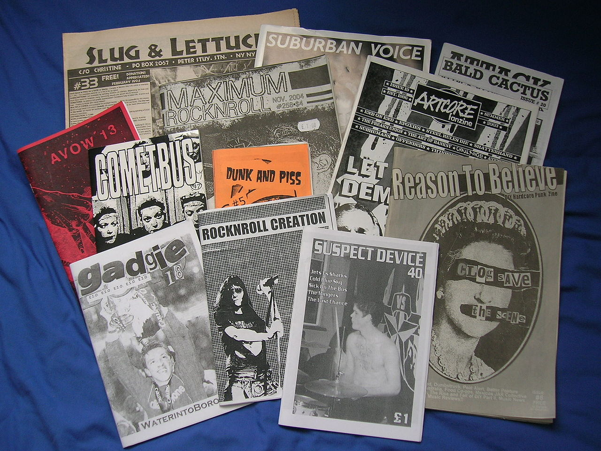

Chance and Choice
Readings
Over the next few weeks, and before our lecture in week 8, please spend some time with the following readings. They are available from the UTS library as digital readings: Access them here
Studio A: world building zine task
Introduction
This task looks at using chance to build a small, imagined world. You will work through a series of short tasks that will lead to you having the "raw materials" from which you can then further develop this world. While we use chance as an tool to build ideas for this world, both your imagination and your own agency to make choices along the way, will play equally important roles.
For this studio, you will need to access the following Miro board. You will work through this in studio time, so it is important you participate in the studio. While you will be brining together the elements for your own world, this is a collaborative task in that you will be sharing ideas and findings with each other along the way.
Miro Board
Zine Templates
There are templates for the zine you will be producing in both photoshop and indesign formats. Choose the platform you are most comfortable working in.
Research Task
Look into the history of zines. What makes a "zine" different from "magazine"? if you hade to describe what a zine was in 3 bullet points, what would these be?
